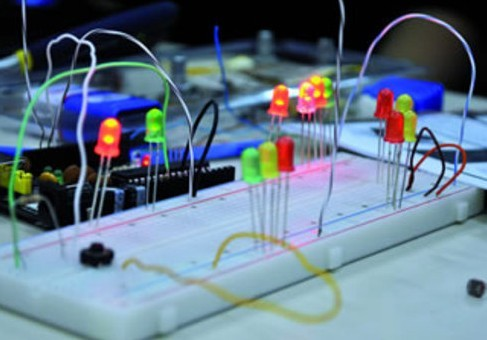

MuSA Na ARede
Matéria publicada na revista AREDE, licenciada sob Creative Commons Atribuição-Uso não-comercial 3.0 Brasil, aqui. Nosso agradecimento à jornalista Bárbara Ablas.
Além da imaginação
Experimentos em arte e tecnologia abrem portas para o conhecimento livre (Bárbara Ablas)

Juntar arte e tecnologia dá samba. Ou techno music. E um grupo que está em sintonia total com essa composição tão criativa é o coletivo independente denominado Multimídias, Sistemas & Arte, mais conhecido como MuSA. No plano conceitual, a proposta é estimular a criação, a reflexão e a troca de conhecimentos entre arte e tecnologia. Na prática, a galera fabrica interfaces tecnológicas alternativas de baixo custo. Com sucata de computadores e tecnologias livres, desenvolvem pesquisas e projetos experimentais em áreas como música, games, organismos cibernéticos, tecnologia “vestível”, entre outras interfaces interativas. “Começamos em 2008, como um núcleo de pesquisa que utilizava computação gráfica, sensores e atuadores retirados da sucata para dialogar com ambientes externos”, diz Vilson Vieira, integrante do MuSA e professor do curso de Ciências da Computação da Universidade de Santa Catarina (Udesc).
O coletivo, composto por outros quatro acadêmicos da Udesc, aposta na democratização do conhecimento técnico para mostrar que todos podem aprender a construir seus próprios projetos e artefatos. “Queremos desmistificar a ideia de que a tecnologia é uma caixa preta que poucos podem explorar”, ressalta Vilson. Por isso, o MuSA tenta aproximar as pessoas do “como se faz” ensinando conceitos básicos das áreas de computação, eletrônica, softwares e hardware livres e relacionado-os a reciclagem de material tecnológico.
Foi o que aconteceu no Ateliê Livre, atividade realizada durante o 11º Fórum Internacional de Software Livre (FSL), em julho, em Porto Alegre (Rio Grande do Sul). Organizado pelo MuSA, em parceria com o Centro Marista de Inclusão Digital (CMID), de Santa Maria (RS), o Ateliê funcionou como um laboratório coletivo de experimentação em arte e tecnologia. O público conheceu, por exemplo, a interface DJ, feita com um HD (disco rígido) tirado do lixo. É possível manipular o CD do HD como fazem o DJs em suas mesas de som.
Outra criação que fez bastante sucesso entre crianças e adultos foi um controlador para jogar Super Mario Bros usando apenas as pernas apoiadas sobre uma plataforma de papelão. “No pedaço de papelão ligamos sensores de pressão chamados piezoelétricos. Conforme as pessoas pisavam nos sensores, o personagem acompanhava os movimentos do corpo”, explica Oriel Frigo, do MuSA. Esse projeto deve ser mostrado também na 9ª edição do SBgames (Simpósio Brasileiro de Jogos e Entretenimento Digital), que acontecerá em Santa Catarina, em novembro.
Um joystick transformado em instrumento musical e em controle para movimentar um robô é mais um exemplo de como é possível atribuir diversos significados para uma mesma peça reciclada. “Ao invés do teclado conectado ao computador, usamos o joystick para produzir música eletrônica. Depois, modificamos a peça para controlar um robô construído pelo CMID”, conta Vilson.
Sem limites
Além de muita criatividade e sucata eletrônica, o que está por trás dessas invenções são tecnologias livres que facilitam a vida de experts e amadores. O MuSA desenvolve projetos com o Arduino, uma plataforma de hardware e software de código aberto e documentação Criative Comons, baseada em microcontroladores eletrônicos, que permite o controle de redes, tomadas, leds, motores e sensores. O Arduino pode ser usado para desenvolver objetos autônomos e interativos como robôs e obras de arte eletrônica. Como o programa é livre, desenvolvedores, arteiros e entusiastas da tecnologia podem reescrever o código e dar asas à imaginação. “O Arduino é bem amigável e até quem não sabe nada sobre programação ou eletrônica pode construir uma placa”, afirma Vilson. Quem não quiser fazer a sua, pode comprar a um preço acessível, de cerca de 30 dólares. O MuSA também ministra oficinas de hardware livre tanto para pessoas ligadas a computação e artes, quanto para leigos. “E todos conseguem aprender”, garante Vilson.
Gabriela Thumé, integrante do coletivo, está utilizando o Arduino em um projeto de game baseado em tecnologia “vestível”. Ela está confeccionando uma camiseta que funcionará como interface para simular o Genius, um antigo jogo de memória visual e sonora. “A camiseta tem LEDs de alto brilho e cores diferentes, que lixei para aumentar a dispersão da luminosidade” conta. Ao todo, são seis botões, cada um com um led no centro e programados com o Arduino. “Quer mais interatividade do que vestir o jogo?”, brinca a criadora da peça. Apesar do Arduino não ser novidade no mundo da tecnologia, ainda é um recurso tecnológico desconhecido do público. “O interessante é que o Arduino tem formado uma grande comunidade de pessoas para estudá-lo e aperfeiçoá-lo”, diz Alan Fachini, outro componente do MuSA.
Dois projetos experimentais do grupo também apresentados no Ateliê Livre do FISL 11 também estão abertos à construção colaborativa. Um é o protótipo de uma mesa multitoque, que pode ser utilizada para aplicações em atividades educacionais, performances musicais, criações visuais e games. “A mesa multitoque é um computador com uma tela sensível ao toque, que dispensa o mouse ou teclado para interagir com o conteúdo”, enfatiza Alan, esclarecendo que existem muitos equipamentos desse tipo no mercado, dos mais simples aos mais avançados. A grande questão, ressalta ele, é democratizar o conhecimento e contribuir para o avanço das tecnologias livres. Por isso, o coletivo documentou toda a pesquisa na web, incluindo um passo a passo em textos e imagens para quem quiser construir uma mesa dessas. Outro é o Arduinome, um controlador usado geralmente para a produção musical baseado no Monome, também considerados hardware livre, explica Vilson. O Monome é uma caixa com botões que, ao serem pressionados, acendem LEDs e emitem sons. Com o equipamento, músicos e curiosos podem se deliciar criando e mixando sons.
Planta inteligente
O MuSA também atua com profissionais das artes, sempre na mesma linha de promover imersões e intercâmbio de conhecimento. Entre abril e maio, o coletivo ministrou o curso de extensão Oficina de Arte e Tecnologia, em Joinville e Florianópolis, em parceria com o curso de Artes Visuais do Centro de Artes (Ceart) da Udesc. Os participantes foram capacitados para a criação de instalações multimídia com tecnologias de código aberto. O resultado do encontro entre a arte e as ciências da computação foi apresentado na exposição Mimesis Mülleriana – uma Plagiocombinação, realizada em Joinville, em julho, na Galeria Municipal Victor Kursancew. O nome da exposição foi inspirado no conceito de Mimetismo Circular, atribuído à descoberta do naturalista alemão Fritz Muller que, observando a flora e a fauna, percebeu que em alguns casos espécies diferentes se imitam reciprocamente por questões de sobrevivência. Para Gabriela, o MuSA vai “contra a corrente” ao realizar parcerias desse tipo: “A maioria das pessoas que estão na área de arte e tecnologia são do curso de Artes e resolveram se aventurar pelo mundo da programação. O contrário é difícil acontecer”.
Um dos xodós do coletivo é a Phytonetiké, uma planta cibernética exposta na Mimesis Mülleriana. O nome é a combinação das palavras gregas phytos (planta) e kibernetiké (cibernética). A Phytonetiké é um organismo autônomo equipado com sensores de luminosidade, umidade e temperatura. Com um sistema de locomoção acoplado e uma rede de neurônios artificiais conectada, a planta se movimenta sozinha em busca do que precisa para sobreviver. Segundo Vilson, o objetivo é discutir os limites entre orgânico e inorgânico, natural e artificial e o desenvolvimento de organismos ciborgues.
LED - Do inglês Light Emitting Diode, é um diodo emissor de luz. Como o dos relógios digitais.